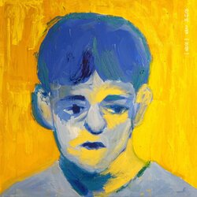

잔나비 《전설》 - 음악적 특징과 평가
잔나비의 정규 2집 《전설》은 밴드의 음악적 정체성을 뚜렷하게 보여주는 대표작으로 평가받는다.
앨범 전반에 흐르는 사운드는 1970~80년대 한국 록과 팝의 감성을 현대적으로 재해석한 것이 특징이며,
복고적인 멜로디 라인과 빈티지한 악기 사운드를 기반으로 한 따뜻하고 서정적인 분위기가 앨범 전체를 관통한다.
특히 이 앨범은 단순한 수록곡 나열이 아닌 하나의 서사 구조를 갖춘 **컨셉 앨범**으로,
인트로부터 마지막 트랙까지 유기적인 흐름을 따라 감정선이 전개된다.
마치 한 편의 청춘 드라마나 소설을 읽는 듯한 느낌을 주며, 각 곡은 인생의 어느 순간과 맞닿아 있는 듯한 이야기를 전한다.
수록곡 중 타이틀곡인 ‘주저하는 연인들을 위해’는 발매 당시 음원 차트를 역주행하며 큰 화제를 모았고,
담담한 보컬과 절제된 편곡, 애틋한 가사로 수많은 청춘들의 마음을 사로잡았다.
이 곡은 단순히 히트곡을 넘어서, 잔나비가 추구하는 음악적 세계관을 대표하는 트랙이기도 하다.
작곡 및 프로듀싱에 있어서는 리더 최정훈을 중심으로 밴드 멤버들이 깊이 관여하여,
자신들의 이야기를 솔직하게 음악으로 풀어낸 점에서도 높은 평가를 받았다.
화려한 사운드보다는 감성적인 선율과 디테일한 감정 표현에 집중한 편곡은
잔나비만의 고유한 음악적 색깔을 더욱 공고히 했다.
비평적으로도 《전설》은 “레트로 감성을 모방하는 수준을 넘어,
한국 대중음악의 정서를 정교하게 복원하고 새롭게 제시한 앨범”이라는 평가를 받으며,
그 해 여러 음반상 후보에 오르거나 수상하기도 했다.
《전설》은 단지 과거를 향한 향수가 아닌,
지금 이 시대의 청춘이 공감할 수 있는 ‘현재형 레트로’를 구현한 앨범이다.
잔나비 특유의 감성과 음악적 깊이가 가장 잘 드러난 이 작품은
한국 인디 밴드 역사에 한 획을 긋는 앨범으로 남게 되었다.